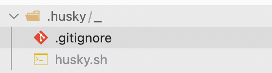
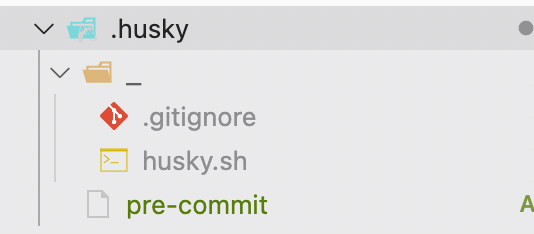
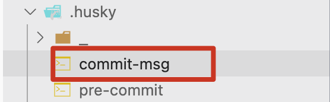

一、提交的代码规范
husky + lint-staged + pre-commit
husky: 操作git钩子的工具
lint-staged: 本地暂存代码检查工具
pre-commit: 通过钩子函数，判断提交的代码是否符合规范
- 安装代码校验依赖
1 | npm i lint-staged husky -D |
- 在package.json中添加脚本
1 | "scripts": { |
执行
npm run prepare, 在根目录创建一个husky文件夹- 
执行
npx husky add .husky/pre-commit "npx lint-staged"，在.husky文件夹下创建pre-commit shell文件 执行 npx lint-staged- 
根目录创建 .lintstagedrc.json 文件控制检查和操作方式
1
2
3
4
5
6{
"*.{js,jsx,ts,tsx}": ["prettier --write .", "eslint --fix"],
"*.md": ["prettier --write"],
"*.{less,css}": ["stylelint --fix"]
}
二、提交信息规范
安装提交信息依赖 @commitlint/config-conventional
1
npm i commitlint @commitlint/config-conventional -D
添加对应的shell调用方式
1
npx husky add .husky/commit-msg 'npx --no-install commitlint --edit "$1"'

添加commitlint配置
1
echo "module.exports = {extends: ['@commitlint/config-conventional']};" > commitlint.config.js
.commitlint.config.js中配置
1
module.exports = { extends: ['@commitlint/config-conventional'] };
package.json中添加
1
2
3
4
5"commitlint": {
"extends": [
"@commitlint/config-conventional"
]
},至此，就可以规范commit提交信息了。
接下来，我们来了解一下commit-msg所使用到的依赖规范具体是什么样的？
2.1 @commitlint/config-conventional
@commitlint/config-conventional 这是一个规范配置,标识采用什么规范来执行消息校验, 这个默认是Angular的提交规范
Commit message的格式
1
2
3
4
5<type>(<scope>): <subject>
<BLANK LINE>
<body>
<BLANK LINE>
<footer>commit messgae分为三个部分
- 标题行(subject)： 必填, 描述主要修改类型和内容。
- 主题内容(body)：描述为什么修改, 做了什么样的修改, 以及开发的思路等等。
- 页脚注释(footer)：可以写注释，放 BUG 号的链接。
各配置
- type类型
- feat: 新功能、新特性
- fix: 修改 bug
- perf: 更改代码，以提高性能（在不影响代码内部行为的前提下，对程序性能进行优化）
- refactor: 代码重构（重构，在不影响代码内部行为、功能下的代码修改）
- docs: 文档修改
- style: 代码格式修改, 注意不是 css 修改（例如分号修改）
- test: 测试用例新增、修改
- build: 影响项目构建或依赖项修改
- revert: 恢复上一次提交
- ci: 持续集成相关文件修改
- chore: 其他修改（不在上述类型中的修改）
- release: 发布新版本
- scope 影响的功能或文件范围, 比如: route, component, utils, build…
- commit message 影响的功能或文件范围, 比如: route, component, utils, build…
- body 具体修改内容, 可以分为多行.
- Footer 一些备注, 通常是 BREAKING CHANGE 或修复的 bug 的链接.
- type类型
例子
1
2
3
4
5
6
7
8
9
10fix: prevent racing of requests
Introduce a request id and a reference to latest request. Dismiss
incoming responses other than from latest request.
Remove timeouts which were used to mitigate the racing issue but are
obsolete now.
Reviewed-by: Z
Refs: #123
参考
Eslint + Prettier + Husky + Commitlint+ Lint-staged 规范前端工程代码规范